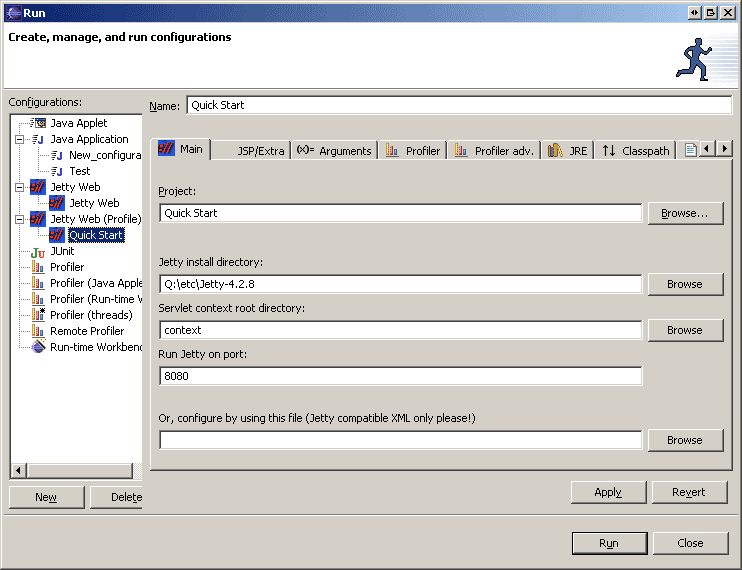
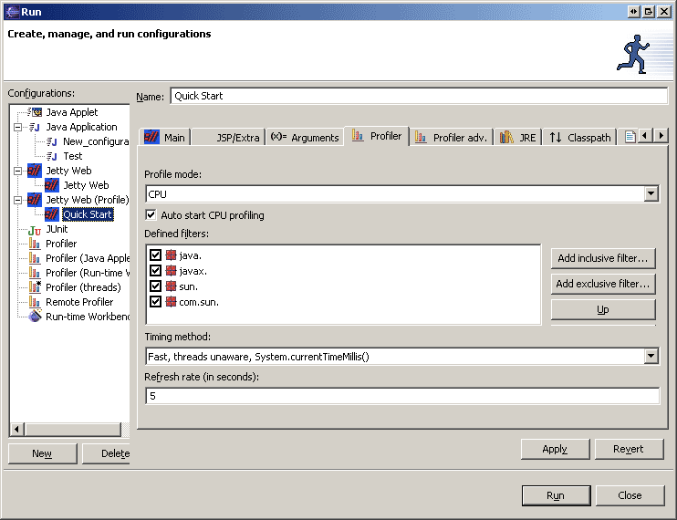
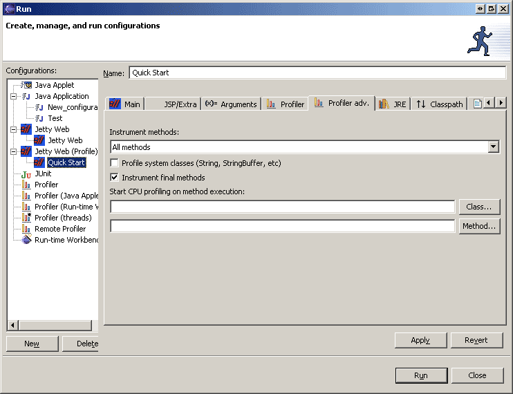

To configure profiling, users should visits the tabs provided by the Eclipse Profiler Plugin.
For detailed instructions on the Tabs and the other features provided by the Profiler plugin, visit the Profiler Plugin website!
Note the profiler tabs..

And the contents of those tabs..

